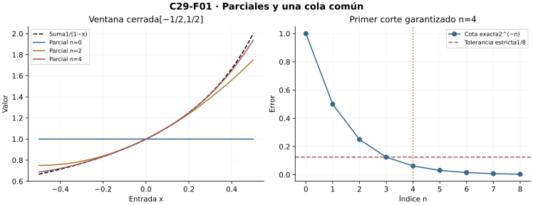
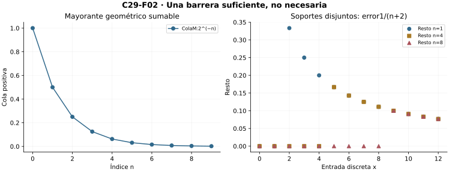
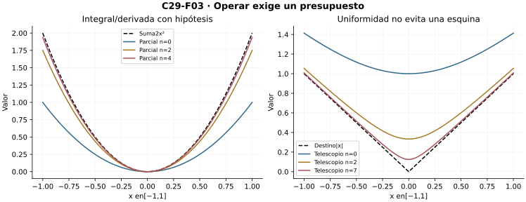
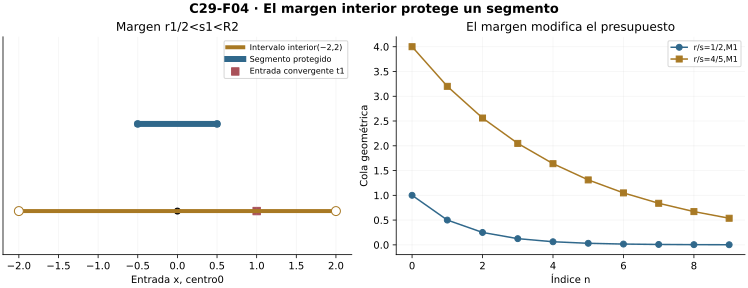
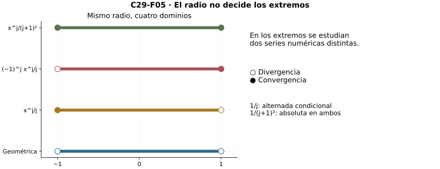
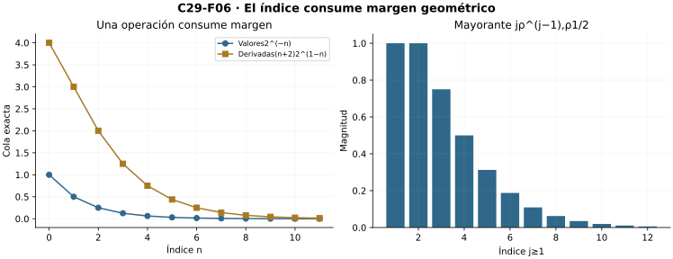
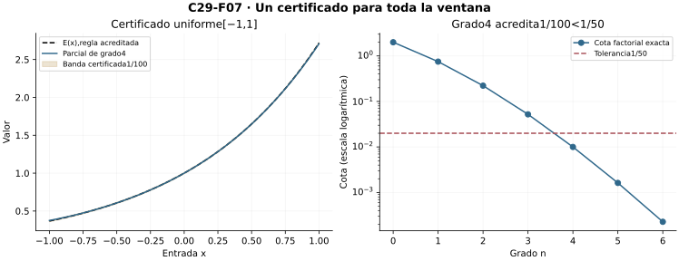
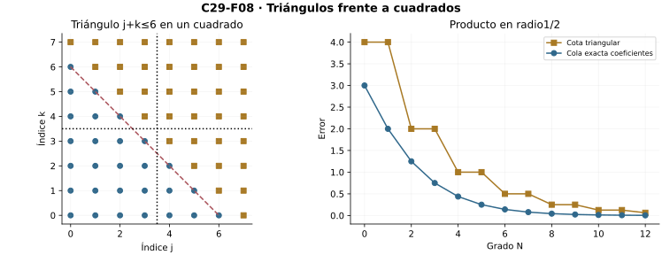

Capítulo 29 — Series de funciones y series de potencias
Índice del libro · Capítulo 29 · Ejercicios · Soluciones · Soluciones de microcontroles
C11 permite controlar sumas numéricas;C27–C28 aportan uniformidad y operaciones. Ahora construiremos series funcionales, radios de potencias y certificados interiores. Las fronteras se examinan aparte. El puente hacia ACM conserva los mecanismos de magnitud sin adelantar teoremas complejos.
29.1. Una serie es una sucesión de sumas parciales
Una suma infinita todavía no es una función. Partimos de funciones \(u_j:X\to\mathbb R\), \(j=0,1,\ldots\), y construimos los objetos finitos \[S_n(x)=\sum_{j=0}^n u_j(x).\] Todos tienen dominio \(X\). El dominio de convergencia \(D\) contiene exactamente las entradas donde la sucesión real \(S_n(x)\) tiene límite finito. Sólo allí definimos \(S(x)=\lim_n S_n(x)\). Por ejemplo, los polinomios geométricos están definidos en toda la recta, pero su serie sólo converge en \((-1,1)\): fuera, sus términos no tienden a cero; en \(-1\), los totales alternan entre dos valores.
La serie converge uniformemente en \(Y\subset D\) cuando \[\forall\varepsilon>0\ \exists N\ \forall n\ge N\ \forall x\in Y:\quad |S_n(x)-S(x)|<\varepsilon.\] El corte no puede depender de la entrada. C27 aplica a \(S_n\) y da el criterio de Cauchy uniforme: para cada \(\varepsilon>0\) existe \(N\) tal que, para todos \(m>n\ge N\) y \(x\in Y\), \[\left|\sum_{j=n+1}^m u_j(x)\right|<\varepsilon.\] La equivalencia incluye existencia: cada columna es Cauchy real, C10 construye su destino, y pasar \(m\) al límite en una cota con margen \(\varepsilon/2\) da un corte común para aproximarlo. No se presupone \(S\) para aplicar el criterio.
El resto \(R_n=S-S_n\) corresponde a términos desde \(n+1\). Si tenemos una envolvente \(|R_n(x)|\le E_n\to0\), basta escoger \(N\) con toda su cola por debajo de la tolerancia. Cuando existe el supremo real de los errores, éste es la menor envolvente; no necesitamos que todos los prefijos estén acotados para formular Cauchy. Una cantidad finita de funciones iniciales no altera la convergencia uniforme de la serie: se cancela al comparar sumas parciales después del mismo prefijo, aunque esas funciones iniciales no estén acotadas en \(Y\).
El término individual es una alarma, no un criterio suficiente. Si \(S_n\to S\) uniformemente, para \(j\ge N+1\), \[|u_j(x)|=|S_j(x)-S_{j-1}(x)|\le |R_j(x)|+|R_{j-1}(x)|.\] Así \(u_j\to0\) uniformemente. La recíproca falla ya para funciones constantes \(u_j(x)=1/(j+1)\): los términos desaparecen y la serie armónica diverge.
Una ventana interior. Para \(|x|\le r<1\), la identidad finita geométrica y su límite dan \[S_n(x)=\frac{1-x^{n+1}}{1-x},\qquad S(x)=\frac1{1-x},\qquad |R_n(x)|\le\frac{r^{n+1}}{1-r}.\] En todo \((-1,1)\) falta uniformidad: cada resto \(x^{n+1}/(1-x)\) es no acotado cuando \(x\) se aproxima a \(1\) desde dentro. Convergencia en cada ventana cerrada interior no significa convergencia uniforme en todo el dominio abierto.

Microcontroles
- ¿Qué objeto existe antes de definir la suma de una serie funcional?
- ¿Qué define el dominio \(D\)?
- ¿Desde qué índice empieza \(R_n\)?
- ¿Cuál es el orden de cuantificadores uniforme?
- ¿Cauchy uniforme requiere conocer primero la suma?
- ¿Qué implica uniformidad sobre los términos?
- ¿Por qué un prefijo no acotado puede ser inocuo?
- ¿La geométrica es uniforme en todo \((-1,1)\)?
29.2. El criterio M y lo que no afirma
¿Cómo controlar todos los bloques de una serie sin conocer todavía su suma? Sustituimos cada término por un presupuesto numérico común a todas las entradas.
Criterio M de Weierstrass. Supongamos \(M_j\ge0\), \(|u_j(x)|\le M_j\) para todo \(j\) y \(x\in X\), y que la serie numérica \(\sum_{j=0}^{\infty}M_j\) converge a \(A\). Entonces \(\sum u_j\) converge uniformemente en \(X\). También converge uniformemente la serie de magnitudes \(\sum|u_j|\), y en cada entrada la primera serie converge absolutamente.
Prueba desde bloques finitos. C11 entrega un corte para todas las colas finitas de la serie positiva. Después de él, \[|S_m(x)-S_n(x)|\le\sum_{j=n+1}^m |u_j(x)|\le\sum_{j=n+1}^m M_j<\varepsilon/2.\] No depende de \(x\). Cauchy uniforme construye \(S\); la misma comparación aplicada a las sumas de magnitudes construye su destino uniformemente. Fijando \(n,x\) y pasando \(m\) al límite, obtenemos \[|R_n(x)|\le T_n,\qquad T_n=A-\sum_{j=0}^nM_j=\sum_{j=n+1}^{\infty}M_j.\] Asimismo \(|S(x)|\le A\). El paso al límite conserva \(\le\), no una desigualdad estricta sin margen. \(T_n\to0\) es un certificado disponible antes de evaluar \(S\).
Para \(|u_j(x)|\le C\rho^j\), \(0<\rho<1\), resulta \(T_n=C\rho^{n+1}/(1-\rho)\). Por ejemplo \(u_j(x)=x^j\) en \([-1/2,1/2]\) tiene \(E_n\le2^{-n}\): para exigir error estrictamente menor que \(1/8\) basta \(n\ge4\). \(n=3\) es frontera; la desigualdad débil del certificado no lo admite.
Tres propiedades distintas. Convergencia absoluta en cada entrada, convergencia uniforme de la serie de magnitudes y existencia de mayorantes sumables comunes son afirmaciones diferentes. El criterio M implica las tres, pero no es necesario para uniformidad. En \(X=\{0,1,2,\ldots\}\), pongamos \(u_j(x)=1/(j+1)\) si \(x=j\) y \(0\) en otra entrada. Cada suma tiene a lo sumo un término no nulo. El resto tiene supremo \(1/(n+2)\), tanto para la serie original como para la de magnitudes: ambas son uniformes. Sin embargo cualquier mayorante común satisface \(M_j\ge1/(j+1)\), de modo que ninguna serie de mayorantes converge.
La otra separación aparece en la geométrica sobre \((-1,1)\): en cada entrada converge absolutamente, pero no uniformemente. Y la serie constante \((-1)^j/(j+1)\) converge uniformemente por el criterio alternado de C11, sin converger absolutamente. El dominio y las cancelaciones son parte del diagnóstico.
Si la comparación M sólo vale desde un índice fijo, se aplica al tramo final. El prefijo se suma aparte. No se concluye entonces \(|S|\le A\) sin incluir una cota para ese prefijo; éste puede ser no acotado.

Microcontroles
- ¿Qué debe dominar \(M_j\)?
- ¿Qué condición numérica falta si sólo se dan mayorantes?
- ¿Cómo se controla un bloque finito bajo M?
- ¿Qué desigualdad queda al pasar al límite?
- ¿M controla la serie de magnitudes?
- ¿Es necesario M para uniformidad?
- ¿Absoluta puntual implica uniforme?
- Con \(E_n\le2^{-n}\), ¿qué corte certifica error menor que \(1/8\)?
29.3. Operaciones sobre sumas infinitas
Las operaciones actúan primero sobre \(S_n\), donde todo es finito. C28 decide qué presupuesto permite pasar después al límite.
Continuidad. Si cada \(u_j\) es continua en \(X\) y la serie converge uniformemente allí, cada \(S_n\) es continua y C28 hace continua a \(S\) en el dominio relativo. En un dominio abierto basta uniformidad en una vecindad de cada punto. No se necesita una única banda para todo el abierto. El criterio M con términos continuos proporciona una condición suficiente inmediatamente reutilizable.
Integral propia en un marco fijo. Sean \(u_j\) integrables en \([a,b]\) y \(S_n\to S\) uniformemente allí. C28 demuestra primero que \(S\) es integrable y luego \[\int_a^b S(x)\,dx=\lim_n\sum_{j=0}^n\int_a^b u_j(x)\,dx=\sum_{j=0}^{\infty}\int_a^b u_j(x)\,dx.\] La serie de integrales converge porque sus sumas parciales convergen al destino exhibido. Si \(|R_n|\le E_n\), \[\left|\int_a^bS-\sum_{j=0}^n\int_a^b u_j\right|\le(b-a)E_n.\] Para acumuladas desde \(c\in[a,b]\), el error es a lo sumo \(|x-c|E_n\). Se conserva la orientación al integrar hacia la izquierda. No se extiende este presupuesto a longitudes que crecen con \(n\).
Derivación con ancla. Sean \(u_j\) continuas en \([a,b]\), derivables en \((a,b)\), con \(a<b\). Supongamos que \(\sum u_j^{\prime}\) converge uniformemente en \((a,b)\) a \(g\) y que la serie numérica \(\sum u_j(c)\) converge a \(\lambda\) en algún \(c\in[a,b]\). Las sumas parciales tienen derivadas \(S_n^{\prime}=\sum_{j=0}^n u_j^{\prime}\) y valores \(S_n(c)\to\lambda\). C28 produce \(S_n\to S\) uniformemente en \([a,b]\) y \(S^{\prime}=g\) en \((a,b)\). En particular \[\left(\sum_{j=0}^{\infty}u_j\right)^{\prime}=\sum_{j=0}^{\infty}u_j^{\prime}.\] Si \(|g-S_n^{\prime}|\le D_n\), su certificado es \[|S(x)-S_n(x)|\le|\lambda-S_n(c)|+|x-c|D_n.\] El ancla paga las constantes que las derivadas no ven. La prueba de C28 usa valor medio e incrementos, sin suponer continuidad de todas las derivadas ni integrar derivadas posiblemente discontinuas. Para series en toda la recta, se aplica en marcos acotados que contienen cada punto y el ancla; resulta uniformidad local.
La sola uniformidad de valores no permite derivar. Sea \(h_n(x)=\sqrt{x^2+1/(n+1)^2}\) en \([-1,1]\). Definamos \(u_0=h_0\) y, para \(j\ge1\), \(u_j=h_j-h_{j-1}\). Entonces \(S_n=h_n\) telescópicamente y \(S_n\to|x|\) uniformemente, con error máximo \(1/(n+1)\). Cada término es suave, pero el destino no es derivable en \(0\). Allí todas las derivadas parciales valen \(0\); su límite no puede ser la derivada inexistente del destino. La regularidad infinita de las filas no reemplaza el control de la serie derivada.

Microcontroles
- ¿Por qué son continuos los parciales si lo son los términos?
- ¿Cuál es el marco del intercambio de integral?
- ¿Qué debe probarse antes de integrar el destino?
- ¿Cuál es la cota de error integral?
- ¿Qué serie debe ser uniforme para derivar?
- ¿Por qué hace falta el ancla?
- ¿Se exige continuidad de las derivadas en ese teorema?
- ¿Qué muestra el telescopio de raíces suavizadas?
29.4. Un punto de convergencia abre una región interior
Una serie de potencias de centro \(c\) tiene la forma \[\sum_{j=0}^{\infty}a_j(x-c)^j,\qquad a_j,c\in\mathbb R.\] El término de orden cero es \(a_0\) también en el centro: interpretamos el monomio constante como \(1\). La suma en \(c\) es \(a_0\), no necesariamente cero. Cada parcial es un polinomio definido en toda la recta; su límite puede tener un dominio menor.
Lema interior. Si la serie converge en \(t\ne c\), sus términos tienden a cero y existe \(M\) con \(|a_j(t-c)^j|\le M\) para todos \(j\). Para \(0<r<|t-c|\) y \(|x-c|\le r\), \[|a_j(x-c)^j|\le M\rho^j,\qquad \rho=\frac r{|t-c|}<1.\] El criterio M da convergencia absoluta en cada entrada y uniforme, incluso de las magnitudes, en todo el segmento. Además \(|R_n(x)|\le M\rho^{n+1}/(1-\rho)\). Se emplea sólo convergencia en \(t\), que podría ser condicional. El segmento de radio cero es una única entrada y se trata directamente.
Construcción del radio. Sea \(H=\{|t-c|:\text{ la serie converge en }t\}\). Contiene \(0\). Si \(H\) es acotado, definimos \(R=\sup H\ge0\); si es no acotado, escribimos \(R=\infty\). No afirmamos que el supremo pertenezca a \(H\).
Si \(0<r<R\), el significado del supremo (o la no acotación) entrega una entrada convergente \(t\) con \(|t-c|>r\). El lema protege \([c-r,c+r]\). En consecuencia la serie converge absolutamente cuando \(|x-c|<R\), y uniformemente en cada segmento cerrado interior. Si \(|x-c|>R\), no puede converger: esa distancia pertenecería a \(H\) y excedería su cota. Para \(R=0\), sólo converge en \(c\); para \(R=\infty\), converge en toda la recta, uniformemente en cada segmento acotado.
Cuando \(0<R<\infty\), el dominio es \((c-R,c+R)\) más ninguno, uno o ambos extremos, según las dos series numéricas obtenidas por sustitución. La convergencia en un extremo fuerza el interior, pero no la convergencia en el extremo opuesto. Todo compacto del intervalo abierto está dentro de un segmento cerrado interior: la función continua \(|x-c|\) alcanza allí un máximo menor que \(R\). Por restricción, la uniformidad también vale sobre ese compacto.
Qué no promete el radio. La geométrica tiene \(R=1\) y converge uniformemente en cada \([-r,r]\), \(r<1\), pero no en todo \((-1,1)\). Las cotas empeoran al aumentar \(r\) hacia \(1\). «Localmente uniforme» recuerda ese margen disponible alrededor de cada punto; no significa un corte común hasta la frontera.

Microcontroles
- ¿Cuánto vale una serie de potencias en su centro?
- ¿Qué acotación proporciona convergencia en \(t\ne c\)?
- ¿Cuál es la razón del mayorante interior?
- ¿Cómo se define un radio finito?
- ¿Debe alcanzarse el supremo?
- ¿Qué significa \(R=0\)?
- ¿Qué significa \(R=\infty\)?
- ¿El radio decide los dos extremos?
29.5. Calcular el radio y examinar los extremos
El radio ya existe antes de cualquier fórmula para calcularlo. Las siguientes pruebas proporcionan métodos suficientes; si sus límites no existen, permanece la construcción anterior.
Comparación geométrica por cocientes. Para una serie numérica con términos no nulos desde cierto índice, si \(|b_{j+1}|/|b_j|\to L<1\), elijamos \(L<q<1\). Eventualmente \(|b_{j+1}|\le q|b_j|\); inducción finita da \(|b_{N+k}|\le|b_N|q^k\). C11 prueba convergencia absoluta por comparación. Si el límite es \(L>1\), elijamos \(1<q<L\). Eventualmente las magnitudes crecen al menos como \(|b_N|q^k\), así que los términos no tienden a cero y la serie diverge. El mismo argumento funciona si el cociente tiende a infinito. El caso \(L=1\) queda sin decidir.
Para coeficientes eventualmente no nulos, si \(|a_{j+1}/a_j|\to L\), el cociente de los términos en una entrada distinta del centro tiende a \(L|x-c|\). Por ello \(R=1/L\) si \(0<L<\infty\), \(R=\infty\) si \(L=0\) y \(R=0\) si \(L=\infty\). Las escrituras \(1/0\) y \(1/\infty\) sólo son convenciones de estos casos, no divisiones reales. Si hay infinitos ceros, no se usa una división no definida.
Comparación por raíces. Si \(|b_j|^{1/j}\to L<1\), una barrera eventual \(q<1\) da \(|b_j|\le q^j\). Si \(L>1\), una barrera inferior \(q>1\) impide que los términos desaparezcan. Para \(j\ge1\), \(|a_j(x-c)^j|^{1/j}=|a_j|^{1/j}|x-c|\). Si las raíces de los coeficientes tienen límite \(L\) finito o infinito, resultan las mismas fórmulas de radio y los mismos casos extremos. Aquí no se introduce una fórmula con limsup sin construir esa herramienta.
Cuatro fronteras con el mismo radio. Centremos en cero. El coeficiente inicial de las dos series con denominador \(j\) se fija como cero.
| Serie | \(R\) | En \(-1\) | En \(1\) |
|---|---|---|---|
| \(\sum_{j=0}^{\infty}x^j\) | \(1\) | Diverge | Diverge |
| \(\sum_{j=1}^{\infty}x^j/j\) | \(1\) | Condicional | Diverge |
| \(\sum_{j=1}^{\infty}(-1)^jx^j/j\) | \(1\) | Diverge | Condicional |
| \(\sum_{j=0}^{\infty}x^j/(j+1)^2\) | \(1\) | Absoluta | Absoluta |
Los cocientes de coeficientes tienden a \(1\), pero no resuelven los extremos. Allí C11 distingue términos que no desaparecen, armónica y alternada. Para la última, desde \(j=1\), \[\frac1{(j+1)^2}\le\frac1{j(j+1)}=\frac1j-\frac1{j+1},\] así que una comparación telescópica prueba convergencia absoluta en ambos extremos, sin invocar un criterio no construido. De hecho el mismo mayorante M prueba uniformidad en todo \([-1,1]\) para esa última serie.
Una serie con sólo finitos coeficientes no nulos tiene \(R=\infty\). Para \(a_j=j!\), los cocientes de términos son \((j+1)|x|\to\infty\) si \(x\ne0\), luego \(R=0\). Para \(a_j=1/j!\), los cocientes tienden a cero en cada entrada y \(R=\infty\). Finalmente \(\sum_{k=0}^{\infty}x^{2k}\) tiene ceros en todos los coeficientes impares: se reconoce como geométrica de razón \(x^2\), de radio \(1\), sin forzar un cociente entre coeficientes consecutivos.

Microcontroles
- ¿Qué demuestra un cociente límite menor que \(1\)?
- ¿Qué demuestra un cociente límite mayor que \(1\)?
- ¿Qué decide un cociente límite igual a \(1\)?
- ¿Cuándo se prohíbe el cociente consecutivo de coeficientes?
- ¿Qué radio da un límite de raíces \(L\in(0,\infty)\)?
- ¿Qué radios dan los casos \(L=0\) y \(L=\infty\)?
- ¿Cómo convergen los extremos de \(\sum_{j\ge1}x^j/j\)?
- ¿Por qué converge \(\sum1/(j+1)^2\) sin otro criterio?
29.6. Derivar e integrar dentro del radio
Sea \(F(x)=\sum_{j=0}^{\infty}a_j(x-c)^j\) con \(R>0\). Fijemos \(0<r<s<R\). La convergencia en \(c+s\) entrega \(|a_j|s^j\le M\). En \(|x-c|\le r\), para \(j\ge1\), \[|ja_j(x-c)^{j-1}|\le\frac M s\,j\rho^{j-1},\qquad \rho=r/s<1.\] La serie numérica \(\sum_{j=1}^{\infty}j\rho^{j-1}\) converge: el cociente de sus términos tiende a \(\rho<1\), por §29.5. Más precisamente, la identidad finita obtenida al derivar el polinomio geométrico es \[\sum_{j=1}^n j\rho^{j-1}=\frac{1-(n+1)\rho^n+n\rho^{n+1}}{(1-\rho)^2}.\] Los términos \(n\rho^n\) tienden a cero por la misma comparación de cocientes. Pasando al límite, la suma es \(1/(1-\rho)^2\) y la cola desde \(n+1\) es \[\sum_{j=n+1}^{\infty}j\rho^{j-1}=\frac{\rho^n[(n+1)-n\rho]}{(1-\rho)^2}.\] No se ha derivado una suma infinita para justificar este mayorante: sólo una identidad polinómica finita.
El criterio M hace uniforme la serie derivada en el segmento. Las sumas parciales originales valen exactamente \(a_0\) en el ancla \(c\). §29.3 aplica y demuestra, en su interior, \[F^{\prime}(x)=\sum_{j=1}^{\infty}ja_j(x-c)^{j-1}.\] Para cualquier punto con \(|x-c|<R\), podemos elegir \(r,s\) que lo contengan estrictamente, así que la fórmula vale en todo el intervalo abierto. Las cotas son locales, con un margen positivo respecto de \(R\).
El radio de la derivada coincide. Acabamos de probar que la serie derivada converge absolutamente en cada distancia menor que \(R\), luego su radio es al menos \(R\). Recíprocamente, si la derivada converge en una entrada \(t\) de distancia positiva, en cualquier distancia \(d<|t-c|\) converge absolutamente por el lema interior aplicado a esa nueva serie. Allí, \[\sum_{j=1}^{\infty}|a_j|d^j\le d\sum_{j=1}^{\infty}j|a_j|d^{j-1}<\infty.\] Así \(R\ge d\) para todo \(d<|t-c|\). Ninguna distancia convergente de la derivada puede exceder \(R\). Esto cubre radios infinitos y series polinómicas sin restar infinitos.
Integral término a término. La uniformidad en cada segmento cerrado interior y §29.3 dan \[\int_c^x F(t)\,dt=\sum_{j=0}^{\infty}\frac{a_j}{j+1}(x-c)^{j+1},\qquad |x-c|<R.\] La orientación está incluida. La serie integrada tiene el mismo radio. Primero converge absolutamente en el interior por comparación. Si converge en una distancia \(d>0\), sus términos están acotados: \(|a_j|d^{j+1}/(j+1)\le B\). En cada \(0<r<d\) recuperamos \[|a_j|r^j\le\frac B d(j+1)(r/d)^j,\] un mayorante sumable. Por tanto el radio original es al menos cualquier \(r<d\), y no puede haber distancias convergentes de la integrada por encima de \(R\).
Órdenes finitos. Iterar la igualdad de radios y el teorema derivativo produce, para cada entero fijo \(k\ge0\), \[F^{(k)}(x)=\sum_{j=k}^{\infty}\frac{j!}{(j-k)!}a_j(x-c)^{j-k}.\] Cada orden tiene uniformidad en segmentos interiores. El orden \(k\) se fija antes del corte; no se promete control uniforme de todos los órdenes simultáneamente. Ninguna de estas pruebas autoriza derivar la serie en \(c\pm R\).

Microcontroles
- ¿Por qué se reservan dos radios \(r<s<R\)?
- ¿Qué ancla tienen los parciales originales en \(c\)?
- ¿Cómo se justifica el mayorante derivado sin circularidad?
- ¿Cuál es el radio de la serie derivada?
- ¿La integrada puede aumentar el radio?
- ¿Dónde se permite la fórmula de derivación?
- ¿Qué se fija antes del corte para derivadas iteradas?
- ¿Qué vale \(F^{(k)}(c)\)?
29.7. Coeficientes, funciones y certificados
La suma deja de ser una caja negra: las operaciones acreditadas producen fórmulas y certificados que se pueden verificar independientemente.
Geométrica y su derivada. En \(|x|<1\), \[\frac1{1-x}=\sum_{j=0}^{\infty}x^j,\qquad \frac1{(1-x)^2}=\sum_{j=1}^{\infty}jx^{j-1}.\] La primera identidad procede del resto finito; la segunda emplea §29.6 y la regla derivativa de C18. Integrar la primera desde cero define la función \(L(x)=\int_0^x(1-t)^{-1}\,dt\) en \((-1,1)\) y entrega \(L(x)=\sum_{j=1}^{\infty}x^j/j\). No hace falta identificar \(L\) con un logaritmo construido por otra vía, ni evaluar esta identidad directamente en un extremo.
La exponencial construida por la serie. Definimos \[E(x)=\sum_{j=0}^{\infty}\frac{x^j}{j!}.\] Su radio infinito, ya probado, permite derivar en cada segmento: \(E^{\prime}=E\) al reindexar \(j-1\) y \(E(0)=1\). De aquí se obtienen propiedades sin asumirlas. Por producto y cadena, la derivada de \(E(x)E(-x)\) es cero; valor medio hace constante el producto en cada segmento, y su valor en cero es \(1\). Así \(E(x)\) nunca es cero. Su continuidad, el valor positivo en cero y el teorema del valor intermedio hacen \(E(x)>0\) para toda entrada.
Fijemos \(a\). La función de \(t\) dada por \(E(a+t)E(-t)\) tiene derivada cero y vale \(E(a)\) en cero. Como \(E(t)E(-t)=1\), se sigue \(E(a+t)=E(a)E(t)\). Además, si una función derivable \(y\) en un intervalo que contiene cero satisface \(y^{\prime}=y\) y \(y(0)=1\), la derivada de \(y(t)E(-t)\) es cero. Valor medio da ese producto igual a \(1\), luego \(y=E\) en el intervalo. Se ha probado existencia y unicidad para esta ecuación concreta, sin importar un teorema general de ecuaciones diferenciales.
Un certificado factorial en una ventana. Para \(|x|\le r\), tomemos \(n\) con \(q=r/(n+2)<1\). Desde el primer término omitido los cocientes de magnitudes son a lo sumo \(q\), y entonces \[\left|E(x)-\sum_{j=0}^n\frac{x^j}{j!}\right|\le\frac{r^{n+1}}{(n+1)!}\frac1{1-r/(n+2)}.\] En \([-1,1]\) y \(n=4\), esta cota es \(1/100\), por debajo de la tolerancia estricta \(1/50\). Una prueba numérica en algunos puntos no reemplaza esta garantía para todas las entradas.
Los coeficientes están determinados por la función. La fórmula de orden \(k\) en el centro deja sólo el término \(j=k\): \[F^{(k)}(c)=k!a_k.\] Si dos series del mismo centro representan la misma función en una vecindad de \(c\), con radios positivos, sus derivadas de cada orden coinciden allí y todos sus coeficientes son iguales. Esto no afirma que cualquier función infinitamente derivable sea representable por una serie. Hemos probado una propiedad de funciones que ya tienen representación convergente, no su existencia para funciones arbitrarias.

Microcontroles
- ¿Por qué \(E\) se deriva en toda la recta?
- ¿Qué reindexación da \(E^{\prime}=E\)?
- ¿Cómo se acredita \(E(x)E(-x)=1\)?
- ¿Por qué \(E\) es positiva?
- ¿Qué barrera usa la cola factorial después del grado \(n\)?
- ¿Qué cota da grado cuatro en \([-1,1]\)?
- ¿La unicidad de coeficientes construye una serie para toda función suave?
- ¿Qué identifica la integral geométrica sin nombrar logaritmos?
29.8. Productos y el puente hacia análisis complejo
Para sumar dos series basta sumar parciales con el mismo corte: la triangular suma sus errores. Multiplicar obliga a revisar qué región de pares de índices se está sumando.
Producto de Cauchy de series numéricas absolutamente convergentes. Sean \(\sum\alpha_j=A\) y \(\sum\beta_j=B\), con totales de magnitudes \(A_*\!,B_*<\infty\). Definamos \(\gamma_n=\sum_{j=0}^n\alpha_j\beta_{n-j}\), una suma finita. Los totales de magnitudes de \(\gamma\) están acotados por \(A_*B_*\): cada triángulo \(j+k\le N\) está dentro del cuadrado \(0\le j,k\le N\), y la triangular finita controla el primero por el producto de dos sumas positivas. C11 construye convergencia absoluta de \(\sum\gamma_n\).
Para identificar su suma, sea \(h=\lfloor N/2\rfloor\) y comparemos el triángulo \(j+k\le N\) con un cuadrado \(0\le j,k\le m\), \(m\ge N\). Cada par del cuadrado fuera del triángulo tiene \(j>h\) o \(k>h\). Por consiguiente \[\left|\Big(\sum_{j=0}^m\alpha_j\Big)\Big(\sum_{k=0}^m\beta_k\Big)-\sum_{n=0}^N\gamma_n\right|\le B_*T_\alpha(h)+A_*T_\beta(h),\] donde \(T_\alpha(h)=\sum_{j>h}|\alpha_j|\) y análogamente para \(\beta\). Fijando \(N\) y pasando \(m\) al límite, el producto finito tiende a \(AB\). Después \(N\to\infty\) hace desaparecer las dos colas. Hemos probado \(\sum\gamma_n=AB\) sin reordenar una suma doble infinita no justificada. Si uno de los totales de magnitudes es cero, los correspondientes términos son todos cero y la afirmación también vale.
Producto de potencias. Para dos series del mismo centro \(c\), con radios \(R_A,R_B>0\), definimos los coeficientes finitos \(d_n=\sum_{j=0}^n a_jb_{n-j}\). En cada \(|x-c|<\min(R_A,R_B)\), las series numéricas son absolutamente convergentes. El resultado anterior demuestra \[F(x)G(x)=\sum_{n=0}^{\infty}d_n(x-c)^n.\] El radio del producto es al menos el mínimo; puede ser mayor. Por ejemplo \((\sum_{n\ge0}x^n)(1-x)=1\) en \((-1,1)\): el producto tiene sólo su coeficiente constante no nulo y radio infinito. La identidad demostrada en el dominio común no declara convergente la serie geométrica fuera de él.
Si las series de magnitudes convergen uniformemente en una ventana y sus totales están acotados allí por \(A_*,B_*\) comunes, la misma cota triangular prueba uniformidad del producto de Cauchy. Para potencias esto está asegurado por el criterio M en cada segmento interior. La absoluta puntual basta para identificar el producto en una entrada; la cota común es lo que protege todas las entradas a la vez.
Puente hacia ACM. El mecanismo interior depende de una magnitud: \(|a_j(x-c)^j|\le M(r/s)^j\), y no del orden de \(x\). En análisis complejo, la distancia \(|z-c|\) describe discos en lugar de segmentos; la triangular y las magnitudes volverán a proteger sumas y productos. Aquí esa observación es una ruta curricular: no se afirma todavía diferenciabilidad compleja, continuación analítica, integración en curvas ni comportamiento en toda la circunferencia frontera. Se reconstruirán allí las definiciones y las pruebas pertinentes. El aprendizaje transferible es concreto: fijar una región interior, reservar un margen y controlar su cola completa.
Cierre del capítulo. Una serie funcional se estudia mediante sus parciales; Cauchy construye la suma; M aporta un presupuesto numérico; C28 permite operaciones bajo sus hipótesis. Las potencias añaden una geometría radial, uniformidad interior, coeficientes recuperables y productos acreditados. La siguiente puerta de ANM es C30, Espacios métricos: abstraerá la distancia que ya organiza estas ventanas, sin abrirse en este cierre.

Microcontroles
- ¿Cómo se define el coeficiente del producto de Cauchy?
- ¿Qué pares recoge el parcial de grado \(N\)?
- ¿Por qué sirve \(h=\lfloor N/2\rfloor\)?
- ¿Cuál es la cota de resto del producto?
- ¿Qué límite se toma primero en la prueba?
- ¿El radio del producto debe ser igual al mínimo?
- ¿Qué protegen los mayorantes comunes en una ventana?
- ¿Qué cambia al anticipar el plano complejo?
Índice del libro · Capítulo 29 · Ejercicios · Soluciones · Soluciones de microcontroles